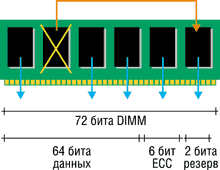

Андрей Борзенко
В нынешней сложной экономической обстановке менеджеры по информатизации сталкиваются с множеством проблем, связанных с развитием ИТ-среды. Финансирование информационных технологий замораживается или урезается, управлять инфраструктурой становится сложнее, при том, что число квалифицированных администраторов весьма ограниченно. В то же время руководство компаний нацеливает сотрудников ИТ-подразделений на более активное проникновение в сферу электронного бизнеса с целью использовать потенциал Интернета, беспроводных коммуникаций и электронной торговли. Возможно, сервер IBM eServer xSeries 440, базирующийся на технологии Enterprise X-Architecture (рис. 1), может стать весьма эффективным решением этой проблемы.
| Рис. 1. Архитектура Enterprise X-Architecture.
|
На выставке CeBIT'2002 корпорация IBM (http://www.ibm.com) впервые представила модель xSeries 440, выполненную на базе самых современных процессоров Intel (рис. 2). Новый сервер, ранее носивший кодовое название Vigil, существует в восьми-, 12- и 16-процессорных конфигурациях. Это первый сервер, в котором IBM применила набор микросхем собственной разработки - до сих пор в выпускавшихся корпорацией серверах Intel-архитектуры использовались чипсеты других компаний, в основном, конечно, Intel и ServerWorks (подразделение Broadcom).
| Рис. 2. Сервер eServer xSeries 440.
|
Над созданием своего набора микросхем (кодовое название Summit) IBM трудилась почти три года. Одна из существенных особенностей этой архитектуры - объединение процессоров в группы по четыре. Между группами организованы высокоскоростные коммуникации. Из четырехпроцессорных блоков, в свою очередь, формируются 8-, 12- и 16-процессорные системы.
По мнению разработчиков, революционная технология и дизайн серверов этого семейства представляют собой новый этап в производстве стандартных высокопроизводительных вычислительных систем, сближая стандартные серверы с системами для корпоративных центров. Сервер xSeries 440 - масштабируемый корпоративный узел на основе технологии Enterprise X-Architecture, выполненный в едином стоечном корпусе высотой 4U и отличающийся высокой степенью масштабируемости, готовности, производительности и управляемости.
Гибкое разбиение xSeries 440 на разделы с разнообразными опциями обеспечивает масштабирование SMP-системы с числом процессоров до 16. Этот сервер стал первой системой IBM, реализованной на основе модульного подхода, что позволяет применять принцип "оплата по мере развития": заказчики могут приобретать оборудование в расчете на реально требуемую производительность, не вкладывая средства "на вырост". Такой тип масштабирования получил название XpandOnDemand (расширение по требованию). Для руководителей компаний масштабируемость xSeries 440 может существенно облегчить экономное планирование средств инвестирования в ИТ-технологии.
Руководство IBM подчеркивает значимость нового сервера в более чем 50-летней истории разработок и взаимодействия с корпоративными клиентами в подразделении IBM Server Group. Дело в том, что серверы семейства xSeries 440 предоставляют возможности, основанные на технологиях мэйнфреймов, всего лишь за часть стоимости настоящего мэйнфрейма. Архитектура Enterprise X-Architecture, построенная на стандартных процессорах, памяти и устройствах ввода-вывода, оптимально сочетает все эти технологии. Высокая готовность (OnForever, т. е. "всегда в работе") в xSeries 440 достигается за счет применения отказоустойчивых подсистем и компонентов, связанных воедино; общие системы управления упрощают техническое обслуживание ИТ-инфраструктуры и высокую производительность труда пользователей. Технологии Active PCI-X и Active Memory повышают степень готовности систем, не только позволяя добавлять и заменять в горячем режиме адаптеры стандарта PCI-X, но и поддерживая горячую замену, зеркалирование и защиту памяти (Memory ProteXion). Будучи частью проекта eLiza, система xSeries 440 представляет в распоряжение пользователей новые инструменты повышения надежности на основе самоконфигурирования и "самоисцеления". Инструментарий управления сервером, поставляемый с xSeries 440, упрощает ИТ-администраторам поддержку и мониторинг состояния серверов ответственных приложений, помогает им управлять инфраструктурой более рационально.
Высокая производительность xSeries 440 достигается не за счет применения сверхбыстродействующих компонентов и форсирования их режимов, а благодаря оптимизации системы на основе новаторских подходов. Одним из примеров может служить кэш-память четвертого уровня XceL4, ускоряющая работу сервера.
Машина xSeries 440, ориентированная в первую очередь на предприятия электронного бизнеса, представляет собой платформу для решения двух типов задач: объединения серверов и обработки приложений для крупных систем. Система может использоваться как единый мощный сервер, обрабатывающий, например, большие базы данных, или как средство консолидации множества небольших "виртуальных" серверов (скажем, нескольких серверов электронной почты) с целью снижения общих затрат. Сервер xSeries 440 работает в единой конфигурации SMP, он рассчитан на поддержку до четырех логических разделов или до 64 виртуальных разделов.
Набор микросхем IBM XA-32
Сердце новой системы - набор микросхем XA-32, который отличается прежде всего усовершенствованной логикой ядра. Именно она определяет взаимодействие различных компонентов системы, в частности, микропроцессоров, системного кэша, оперативной памяти и ресурсов ввода-вывода. XA-32 позволяет реализовать в серверах массовой архитектуры такие важные преимущества, как модульная конструкция узлов системы, логические разделы, высокопроизводительные кластеры и поддержка высокоскоростного удаленного ввода-вывода PCI-X.
Новый набор микросхем разработан в подразделении IBM Microelectronics Division (Остин, шт. Техас) и выпускается по самой современной медной технологии. Набор включает контроллер памяти (один контроллер обслуживает четыре процессора и располагается в пределах модуля SMP Expansion Module), контроллер процессора и кэш-памяти, контроллеры ввода-вывода (имеются два контроллера на одно шасси и плата ввода-вывода, которая управляет как шиной PCI-X, так и подсистемой Remote I/O).
Кэш-память XceL4 Server Accelerator
Кэш-память XceL4 Server Accelerator ускоряет взаимодействие между процессорами, основной памятью и устройствами ввода-вывода. Каждый модуль SMP Expansion Module содержит XceL4 размером 32 Мбайт. XceL4 позволяет устранить узкие места, возникающие из-за того, что в конструкции сервера xSeries имеются 440 высокоскоростных компонентов, которые могут вызывать конфликты в памяти. В некоторых конфигурациях сервера xSeries 440 эта кэш-память позволяет повысить общее быстродействие системы на 20%. При переходе от четырех процессоров к восьми (как в случае добавления второго модуля SMP Expansion Module к базовому четырехпроцессорному блоку, так и при соединении в единую систему двух четырехпроцессорных серверов) пользователи выигрывают от добавления дополнительной кэш-памяти XceL4 объемом 32 Мбайт. В 16-процессорной конфигурации, также безотносительно к ее типу (2x8 или 4x4), выигрыш в быстродействии получается от использования буферной памяти XceL4 объемом 128 Мбайт.
Подсистема памяти
Подсистема памяти xSeries 440 включает 16 разъемов для модулей DIMM на каждый блок CEC, разъемы сгруппированы в два банка. В каждом блоке CEC имеется по два порта памяти (по одному на каждый банк) и по одному контроллеру памяти. Поскольку в сервере xSeries 440 используется четырехкратное чередование адресов (four-way interleaving), необходимо устанавливать по четыре модуля памяти DIMM одинакового объема. В стандартной поставке предусмотрена установка восьми модулей DIMM (все по 512 Мбайт, что дает итоговый объем 2 Гбайт). Можно использовать модули DIMM объемом 512 Мбайт и 1 Гбайт, общий объем системной памяти в случае модулей DIMM 1 Гбайт и двух установленных блоков CEC составляет 32 Гбайт.
Одно из преимуществ xSeries 440 перед конкурирующими системами состоит в использовании памяти DDR 200 МГц, что обеспечивает более широкую полосу пропускания при использовании недорогих и широко доступных стандартных модулей памяти ECC SDRAM.
Порты расширения SMP Expansion
Новое решение IBM позволяет создавать корпоративные масштабируемые вычислительные узлы на основе серверов высокой плотности размещения в стойке. Эти узлы могут составляться из четырехпроцессорных SMP-систем с процессорами, памятью и устройствами ввода-вывода, а в дальнейшем модернизироваться. Модули расширения SMP Expansion Module обеспечивают расширение узлов до уровня восьмипроцессорных SMP-систем, а соединяя с помощью портов SMP Expansion несколько систем, работающих под управлением одной ОС, можно строить и SMP-системы, имеющие вплоть до 16 процессоров.
Порты масштабирования SMP Expansion разработаны IBM для стыковки нескольких шасси серверов xSeries 440 и построения более крупной SMP-системы. Каждый модуль SMP Expansion Module состоит из трех портов расширения. Эти порты представляют собой двунаправленную высокоскоростную магистраль с полосой 3,2 Гбайт/с. В базовой четырехпроцессорной системе они могут использоваться для стыковки с другими xSeries 440 и создания высокопроизводительных кластеров или систем симметричной мультипроцессорной обработки на основе нескольких шасси. Но при добавлении второго модуля SMP Expansion Module эти порты становятся основным средством коммуникации между процессорами в верхнем блоке CEC и процессорами в нижнем блоке.
Соединяя порты верхнего и нижнего блоков, xSeries 440 позволяет построить восьмипроцессорную SMP-систему, а также обеспечить оптимальную производительность для выравнивания нагрузки. Третий порт используется только при конфигурировании четырех- или восьмипроцессорного узла в 16-процессорную SMP-систему.
Новый модульный дизайн
В xSeries 440 применен новый конструктив, повышающий плотность размещения оборудования в стойке и предусматривающий модернизацию путем замены модулей. Шасси xSeries 440 обеспечивает быстрый и простой доступ без помощи инструментов к заменяемым в горячем режиме блокам питания, вентиляторам, устройствам ввода-вывода, модулям SMP Expansion Module и прочему оборудованию. При расширении конфигурации до восьми процессоров в шасси высотой 4U сервер обеспечивает самую высокую плотность для 8-процессорных стандартных серверов, при этом система вентиляции хорошо продумана. xSeries 440 устанавливается только в стойку IBM Netfinity Enterprise или в стандартную стойку Netfinity с комплектом расширения.
Технология Active PCI-X
Об остроте проблемы недопущения простоев сказано уже много. Простои как таковые можно разделить на две категории: незапланированные (непредвиденные аварии: скажем, программные сбои, зависания и отказы оборудования) и запланированные (отключение системы для планового техобслуживания или модернизации). Один из способов сведения к минимуму как плановых, так и неплановых простоев - применение слотов PCI-X с возможностью горячего подключения и горячей замены. Использование этой технологии, известной как Active PCI-X, дает два важных преимущества. Во-первых, вышедшие из строя адаптеры PCI-X или PCI можно заменять, не прерывая работу системы. Во-вторых, добавление адаптеров PCI-X для наращивания мощности или производительности (например, установка нового сегмента Ethernet или нового адаптера RAID и подключение к нему набора жестких дисков) не требует остановки сервера и прекращения обслуживания пользователей.
В семействе xSeries сервер xSeries 440 - второй пример использования нового стандарта PCI-X (первым был xSeries 360, появившийся в ноябре 2001 г.). Новый сервер имеет шесть полноразмерных 64-разрядных разъемов Active PCI-X, поддерживающих замену и добавление плат и адаптеров в горячем режиме, при работающей ОС. Четыре шины ввода-вывода xSeries 440 позволяют использовать два адаптера для частоты 133 МГц (каждый разъем имеет свою собственную шину), две платы для частоты 100 МГц (соответствующие разъемы совместно используют одну шину) и две платы для шины 66 МГц (эти разъемы также разделяют одну шину). Все гнезда обеспечивают напряжение питания адаптеров только 3,3 В.
Технология Active Memory
В xSeries 440 - впервые в классе стандартных серверов - обеспечивается возможность зеркалирования памяти (рис. 3), повышающая уровень готовности для решения ответственных задач в корпоративной среде. Технология Active Memory позволяет зеркалировать физическую память с использованием двух портов. Все системы xSeries 440 поставляются с отключенной опцией зеркалирования памяти, для включения механизма Active Memory необходимо изменить установки в BIOS. После изменения параметров BIOS системе требуется перезагрузка, после чего физическая память, доступная ОС, уменьшится вдвое, а все данные будут одновременно записываться в оба банка памяти.
| Рис. 3. Зеркалирование памяти.
|
Необходимо внимательно проследить за тем, чтобы в каждый из резервированных банков были установлены равные объемы памяти - для гарантированного зеркалирования всех данных. Хотя частичное зеркалирование и поддерживается, резервироваться будет только часть памяти, равная объему памяти во втором банке. Например, если в первом банке установлено 4 Гбайт памяти (четыре модуля DIMM по 1 Гбайт), а во втором - всего 2 Гбайт (четыре DIMM по 512 Мбайт), то лишь первые 2 Гбайт памяти первого банка могут быть зеркалированы во второй. В отличие от технологии RAID в памяти (требующей использования дополнительных контроллеров резервирования памяти), технология Active Memory не оказывает негативного воздействия на производительность, связанного с разделением данных между несколькими контроллерами, и не влечет за собой дополнительного удорожания системы из-за применения нескольких контроллеров памяти.
Основное преимущество зеркалирования памяти состоит в том, что в случае отказа модуля DIMM система останется работоспособной, позволит администратору запланировать техническое обслуживание на удобное время и не приведет к возникновению непредусмотренных простоев. Второе преимущество зеркалирования памяти состоит в возможности установки новых модулей DIMM без отключения системы. Записывая данные в резервные порты, сервер xSeries 440 обеспечивает горячую замену памяти в любом из банков. Поскольку эта функция встроена в контроллер памяти, зеркалирование не зависит от действий ОС. Зеркалирование памяти работает на системах с ОС Linux так же легко, как и в среде Microsoft Windows. В скором времени возможность зеркалирования памяти будет обеспечена для заказчиков в виде модернизации BIOS.
Чтобы задействовать этот механизм, пользователь включает соответствующую опцию в BIOS и перезагружает систему. При обнаружении неисправного модуля DIMM этот модуль регистрируется подсистемой Light Path, а контроллер памяти переходит к считыванию из другого порта. Пользователь получает уведомление сервисного процессора или визуально определяет неисправность по состоянию светодиодов системы Light Path. Далее необходимо открыть верхнюю крышку и локализовать модуль с горящим светодиодом, указывающим на сбойный компонент. Убедившись, что светодиод, разрешающий горячую замену памяти, светится, пользователь открывает дверцу доступа к памяти, где расположен неисправный модуль DIMM, - открывание дверцы посылает сигнал выключения порта, при этом светодиоды питания порта и горячей замены памяти гаснут. Далее надо удалить неисправный модуль DIMM, установить новый и закрыть дверцу доступа. Закрытие дверцы посылает сигнал включения порта - загорается соответствующий светодиод питания, выполняются базовые тесты памяти, гаснет светодиод, указывавший на наличие ошибки в памяти DIMM. Данные копируются в этот порт со скоростью 1 Гбайт за 6 с. Светодиод разрешения горячей замены памяти вспыхивает во время тестирования и копирования данных. После завершения копирования светодиод Memory Hot Plug Enable будет гореть постоянно, а сервер xSeries 440 возвратится в режим зеркалирования.
Технология Chipkill
Архитектура Enterprise X-Architecture знаменует собой третье поколение устройств, использующих технологию Chipkill. В данном случае эта технология интегрируется в наборе микросхем XA-32 - теперь пользователям больше не требуется приобретать дорогостоящие модули Chipkill DIMM. Поскольку алгоритм Chipkill теперь стал частью функциональности контроллера памяти, все его уникальные преимущества доступны при работе со стандартными готовыми модулями памяти ECC SDRAM. Применение нового, более надежного алгоритма не изменило самого принципа технологии Chipkill, предусматривающей коррекцию нескольких однобитовых ошибок и предотвращение отказов памяти.
Как известно, технология Chipkill разработана для повышения надежности операций с оперативной памятью. Это очень важно, если учесть стремительный рост емкости используемых модулей памяти. У DIMM-модуля объемом 1 Гбайт количество логических элементов в четыре раза выше, чем у модуля емкостью 128 Мбайт, - соответственно вчетверо увеличивается и вероятность ошибки. Технология Chipkill решает эти проблемы - модули на ее основе на ходу исправляют ошибки памяти, которые могли бы привести к краху системы.
В системе xSeries 440, целиком и полностью построенной на принципах X-Architecture, применена недорогая реализация технологии Chipkill - стоимость снижена благодаря использованию модулей памяти Chipkill с удвоенной скоростью передачи данных (DDR, Double Data Rate). Поскольку аппаратный контроллер Chipkill-памяти в данном случае установлен в системе, он обеспечивает коррекцию ошибок и для стандартных модулей DIMM. Это один из примеров того, как технология IBM помогает снизить стоимость ИТ-решений.
Оперативная память IBM Chipkill ECC начинает оправдывать себя, когда в модулях памяти на сервере в течение небольшого промежутка времени происходит больше ошибок, чем может "отловить" стандартная технология памяти. Механизм Chipkill в среднем в 100 раз более надежен, чем технология ECC. При возникновении ошибки памяти Chipkill автоматически отключает неисправный модуль, не прекращая работу сервера.
Memory ProteXion
Технология Memory ProteXion - еще одно средство повышения надежности памяти. Она основана на использовании избыточных битов в пакете данных для обеспечения резервирования на случай отказа модуля DIMM (рис. 4). Подобно Chipkill, данная технология интегрирована в контроллер памяти набора микросхем XA-32, поэтому ее преимущества оказываются доступными и при использовании стандартной памяти ECC SDRAM.
|  | Рис. 4. Технология Memory ProteXion.
|
Особенности структуры потока данных приводят к тому, что при передаче конкретного пакета не все биты оказываются задействованы. Во многих современных решениях при использовании пакетов, состоящих из 72 битов, 64 бита приходятся на данные, 6 бит - на ECC. Оставшиеся 2 бита в стандартных серверах обычно не используются. Инженеры IBM нашли достойное применение этим битам - они служат для резервирования передачи данных, подобно технологии горячего резерва в массиве RAID. В случае обнаружения отказа микросхемы модуля DIMM контроллер памяти может перенаправить данные в обход неисправной микросхемы, используя запасные биты. Контроллер выполняет эту процедуру автоматически без выдачи сигнала тревоги соответствующим подсистемам. Предупреждение для инициализации замены этого модуля DIMM выдается только после второго отказа.
Технологии Active Memory, Chipkill и Memory ProteXion обеспечивают несколько уровней избыточности для подсистемы памяти, чего никогда ранее не встречалось в стандартных серверах на базе процессоров Intel. Соединение этих технологий в сервере xSeries 440 придает высочайшую надежность подсистеме памяти.
Масштабирование по мере необходимости
Технология XpandOnDemand помогает заказчикам справляться с возрастающими требованиями к серверам по мере расширения бизнеса. XpandOnDemand предусматривает наращивание мощности путем простого масштабирования - компании могут приобрести для начала четырехпроцессорный блок и затем наращивать мощность блоками по четыре процессора вплоть до полной 16-процессорной конфигурации.
Удаленный ввод-вывод
Технология удаленного ввода-вывода (Remote input-output) позволяет регулировать количество подключаемых периферийных устройств. Хотелось бы особо подчеркнуть важность этой технологии. Потребность в новых слотах PCI или PCI-X обычно бывает вызвана необходимостью расширения системы или повышения производительности. Много дополнительных слотов PCI-X, как правило, требуется в высокопроизводительных системах и кластерах, а также в средах SAN, где наличие нескольких резервных адаптеров для каждой функции - это необходимое условие высокой доступности системы. Дополнительные слоты PCI-X также требуются в случаях, когда заказчик планирует установить адаптеры SCSI RAID, волоконно-оптические адаптеры PCI с резервированием в средах SAN, несколько адаптеров Ethernet (часто с резервированием), высокоскоростные адаптеры для организации обмена данными в составе кластера (часто с резервированием и обеспечением отказоустойчивости) и интерфейсных адаптеров InfiniBand следующего поколения. Все подобные системы могут быстро израсходовать лимит слотов PCI-X, предусмотренных в типичном компактном сервере, оптимизированном для монтажа в стойку. Технология удаленного ввода-вывода позволяет разместить двенадцать слотов для адаптеров PCI/PCI-X вне сервера, на расстоянии нескольких метров от него, и подключить их к системе через высокоскоростной соединительный порт. Дополнительный модуль расширения IBM RXE-100 представляет собой элегантное и экономичное решение проблемы нехватки слотов PCI-X - с оплатой дополнительных возможностей по мере необходимости. Кроме того, RXE-100 защищает инвестиции заказчика, избавляя его от необходимости приобретать дополнительные мощности сразу же.
Логические разделы
Система xSeries 440, обладающая возможностями гибкой конфигурации и объединения нескольких шасси, оптимально приспособлена для физического разбиения на разделы на уровне шасси (рис. 5). Каждый физический раздел при этом может иметь собственную копию ОС и сервисный процессор. Это позволяет строить на базе xSeries 440 такие сложные системы высокой готовности, как высокоскоростные кластеры, с использованием портов масштабирования в качестве высокоскоростного межсоединения. Можно выделить все 16 процессоров для одного экземпляра ОС или же разбить их на четыре физических раздела.
| Рис. 5. Конфигурирование физических разделов.
|
ПО VMware ESX Server делает доступными возможности логического выделения разделов для стандартных серверов и позволяет создавать на основе единого физического устройства несколько виртуальных машин, способных работать в качестве независимых и безопасных серверов. VMware представляет собой слой виртуализации, который находится между ОС с прикладными программами и аппаратным обеспечением (рис. 6). Благодаря этому система xSeries 440 превращается в пул логических вычислительных ресурсов, который затем может динамически выделяться для любых ОС или приложений с варьируемой степенью детализации. При работе с VMware ESX Server 16-процессорную систему можно разбить на 64 виртуальных раздела.
| Рис. 6. Логические разделы.
|
Данная технология в значительной мере снижает затраты и сложность поддержки таких корпоративных приложений, как Web-серверы, серверы приложений, почтовые серверы и серверы баз данных. Кроме того, поскольку обеспечивается поддержка нескольких как сходных, так и разнородных ОС, системные администраторы могут оптимизировать работу приложения, запуская его на безопасных, выделенных виртуальных машинах. Например, некоторые приложения будут выполняться в среде Windows, а другие - в Linux.
При использовании VMware все приложения и ОС могут запускаться с одной и той же системы xSeries 440, что позволяет более эффективно загрузить оборудование, повысить надежность в сравнении с использованием большого числа менее надежных одноцелевых серверов.
Управление системой
Адаптер удаленного администрирования Remote Supervisor Adapter содержит встроенный процессор управления системой и служит важнейшим средством снижения общей стоимости владения. С его помощью можно эффективно управлять расходами и контролировать вложения в информационные технологии. В сочетании с ПО IBM Director этот адаптер дает возможность отслеживать характеристики загруженности системы, планировать наращивание мощности, обнаруживать и устранять слабые звенья производительности.
Remote Supervisor Adapter имеет собственную ОС, независимую от центрального процессора. Поэтому служебный процессор работает и выдает информацию о состоянии системы (доступную через Web-браузер) даже тогда, когда система оказывается неработоспособной - это помогает свести простои к минимуму. Служебный процессор также управляет диагностической панелью (Light Path Diagnostics). Адаптер удаленного администрирования вставляется в специальный слот и не занимает разъема PCI-X.
Как известно, чем лучше поставлено управление системами, тем меньше простоев, тем выше уровень удовлетворенности пользователей и ниже расходы, связанные с непредвиденными обстоятельствами.
* * *
Ни одна из технологий, используемых в xSeries 440, не является новшеством сама по себе - такие решения уже имеются в больших системах IBM. Новшеством данном стало их объединение в сервере на платформе Intel. Руководство IBM полагает, что в сегменте UNIX-серверов xSeries 440 смогут составить достойную конкуренцию продуктам не только Sun Microsystems, но и Unisys, чьи серверы ES7000 используют до 32 процессоров Intel.